Animal Crossing: New Leaf 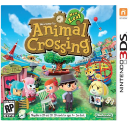 NintendoWelcome to Animal Crossing, where as mayor of your own town you make the decisions that shape your town and your life. Experience a living, breathing world where new friends and new discoveries await every day, morning, noon and night. Express yourself by customizing your character, your house and your town as you create your own ideal world. Expand and extend your Animal Crossing experience with the Animal Crossing Plaza application for the Wii U console! Post messages and attach screenshots of your Animal Crossing: New Leaf moments and learn about new characters and in-game tips. Invite others to see your town by sharing your town’s Dream Address, organize your photos, and more! Animal Crossing: New Leaf game and Nintendo 3DS console sold separately.Disney Infinity Toy Box Challenge 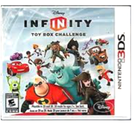 DisneyProduct Information Inspired by the massive success of Activision's Skylanders series, and capitalizing on a huge stable of recognizable franchises, Disney Infinity finds gamers setting collectible plastic figurines on a special Infinity Base in order to play as popular Disney characters. In the Play Set mode, players pull pranks around campus with characters from Monsters University, go on swashbuckling adventures with the Pirates of the Caribbean, fight crime with The Incredibles, and tool around Radiator Springs with characters from Cars, with more post-release sets planned. Each of the sets offers a different kind of gameplay, including racing, sailing, open-world exploration, and classic action combat, and in addition to slots for two different figurines, the Infinity Base also has a third slot for circular or hexagonal Power Discs that let players give their characters special gadgets and power-ups. Characters from one play set cannot venture into the world of another play set, but Disney Infinity also includes the Toy Box mode, which lets all of the characters mingle together, and expands on a popular sandbox mode that debuted in the Toy Story 3 game. Toy Box lets players create their own game worlds from scratch using all the characters and content they have unlocked from each individual play set. Gamers can also use Power Discs to unlock special vehicles or themes from other Disney franchises like Tangled, The Lone Ranger, and Wreck-It Ralph. Much of the Toy Box mode is geared toward kart-racing action, but players are also encouraged to take a Minecraft-like approach to creation, destruction, and game-mode innovation. This starter pack includes the full game, the Infinity Base, three base play sets, the characters Sully, Captain Jack Sparrow, and Mr. Incredible, and one Power Disc.The Legend of Zelda: A Link Between Worlds 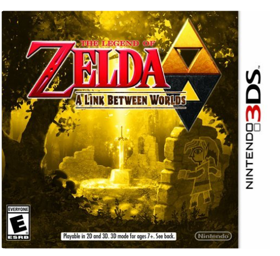 NintendoTwo worlds collide in an all-new adventure set in the world of Super NES classic The Legend of Zelda: A Link to the Past. In this newly spun tale, Link transforms into a living painting to cross into a dark, parallel dimension mirroring Hyrule. Conquer the puzzles, traps, and hidden rooms of deadly dungeons to save both worlds from certain doom!Brought to life in 3D, this beloved, top-down world is the perfect backdrop for a sweeping new tale. Dungeons sink deep below the screen as Link and his attacks pop out, highlighting the nonstop action. The pace is faster than ever, especially since you can swap items on the Nintendo 3DS touch screen. Shoot an arrow, toss a boomerang, bomb a wall, then merge into a painting to slide between two worlds — all in a matter of seconds. With gameplay, visuals, and controls this smooth and consistent, no Zelda adventure has ever been so action-packed. Key Features An all-new adventure in the world of The Legend of Zelda: A Link to the PastBecome a living painting to slide within walls and between two dimensions at warSink into the classic, top-down world of Zelda with 3D visuals at 60 FPSEasily swap inventory items on the Nintendo 3DS touch screenImmerse yourself in a new adventure set in a familiar world view larger Strategically become a painting within the wall to navigate your way through gameplay view larger Switching between items is easier than ever on the touch screen view larger Utilize 3D functionality to truly experience the top-down world of Zelda view larger The Legend of Zelda: Spirit Tracks 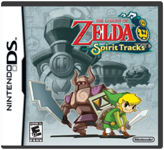 NintendoNintendo The Legend of Zelda: Spirit Tracks NTRPBKIE 299Mario & Luigi: Dream Team 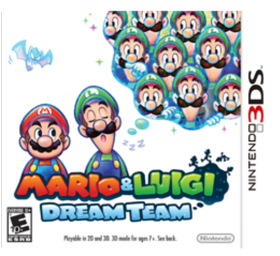 NintendoMario and Luigi embark on the adventure of their dreams in a hilarious action RPG that combines the real world with the wild landscapes of Luigi’s imagination. In Luigi’s dreams, anything is possible - legions of Luigis morph into forms like a bouncy tower or a wrecking ball. You can even poke a sleeping Luigi to alter events in his dream world.Mario Kart 7 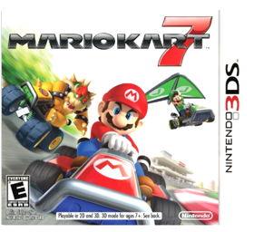 NintendoThe newest installment of the fan-favorite Mario Kart franchise brings Mushroom Kingdom racing fun into glorious 3D. For the first time, drivers explore new competitive kart possibilities, such as soaring through the skies or plunging to the depths of the sea. New courses, strategic new abilities and customizable karts bring the racing excitement to new heights.New Super Mario Bros. 2 NintendoNintendo New Super Mario Bros. 2 CTRPABEE PC GamesPac-Man and Galaga Dimensions 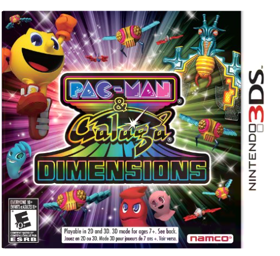 NamcoPAC-MAN and GALAGA come to the Nintendo 3DS system! PAC-MAN & GALAGA Dimensions for the Nintendo 3DS system takes Namco's biggest classic gaming icons and infuses them with fun and exciting gameplay elements! In PAC-MAN Tilt, assist PAC-MAN through stages filled with obstacles, platforms and ghosts by tilting the world to guide PAC-MAN to the goal. Flippers, platforms and power pellets help PAC-MAN jump, flip, swing, and eat his way to the finish line. In GALAGA 3D Impact, rid space of the incoming Galaga army by shooting down enemies in an exciting 3D skirmish! Your Nintendo 3DS system becomes your ship's gun turret as you attack and defend the ship through waves of the Galaga armada.Paper Mario: Sticker Star 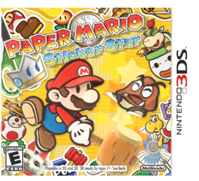 NintendoNintendo’s classic Paper Mario franchise gets a fresh 3D look in its hand-held debut. Stickers are the backbone of Mario’s newest adventure in which players use stickers found in the game to not only win battles, but to solve puzzles as well.Pokemon - White Version  Pokémon Omega Ruby - Nintendo 3DS 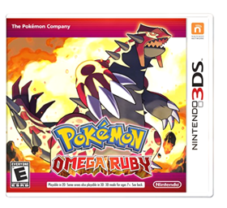 NintendoPokmon fans will collect battle and trade Pokmon through a dramatic story within a spectacular new world.Pokémon White Version 2 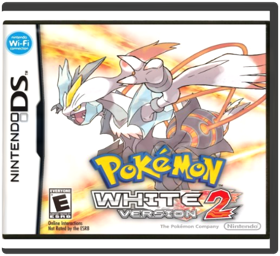 NintendoPokémon White Version 2Pokémon Y 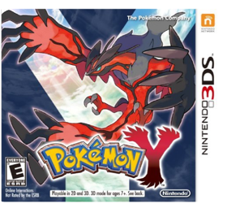 NintendoThe Next Evolution in Pokemon comes to Nintendo 3DS.Super Smash Brothers - Nintendo 3DS 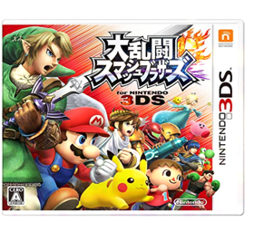 NintendoTetris: Axis 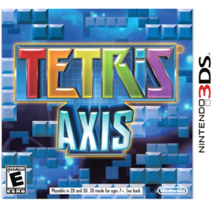 NintendoThe original portable Tetris game was a smash hit on the Game Boy system. The new Tetris: Axis game lets players use the magic of the Nintendo 3DS system to jump into the action in 3D without the need for special glasses. The game includes more than 20 different modes – some familiar, some new. Up to eight players can compete in wireless multiplayer battles, even if only one player has a game card. Tetris: Axis also makes use of the augmented-reality and SpotPass features of Nintendo 3DS. |

Library
Collection Total:
1,126 Items
1,126 Items
Last Updated:
Oct 9, 2016
Oct 9, 2016
 Made with Delicious Library
Made with Delicious Library
Springfield, State zipflap congrotus delicious library Hendrix, Jacob